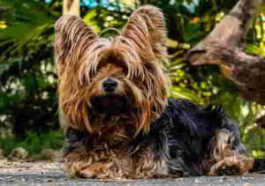

WEB2 - HTML
- Yorkshire Terrier
- Bichon Frise
- Shih Tzu
- Pekingese
1. Yorkshire Terrier

- Yorkshire Terriers are the smallest dog breed in the world.
- They are known for their tiny eyes, short legs, and curled tail.
- The Yorkshire Terrier has a short, silky coat and comes in a variety of colors.
- On average, Yorkshire Terriers weigh around 3 pounds.
- They are active and agile dogs.